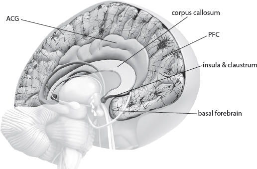
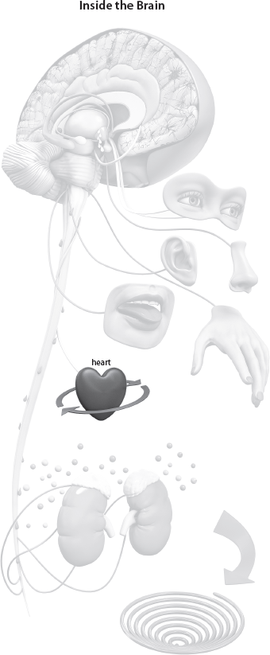

QUESTION: Now that you are aware that thoughts are unstable and changeable when they are in your conscious cognitive mind, can you focus on one in particular and experimenting with changing it?
|
12 Focused Reflection Step 2 |
It is always fun to see science catching up with the Bible, as we discussed in part 1. Focused reflection is an example of this. It is an ancient biblical principle most of us know. But it is also the current rage in neuroscience, and there are hundreds of studies with headlines like
“Mindfulness Meditation May Relieve Chronic Inflammation”[1]
“Evidence Supports Health Benefits of ‘Mindfulness-Based Practices’”[2]
“Breast Cancer Survivors Benefit from Practicing Mindfulness-Based Stress Reduction”[3]
“Don’t Worry, Be Happy: Understanding Mindfulness Meditation”[4]
“Mindfulness Meditation Training Changes Brain Structure in Eight Weeks”[5]
You get the idea.
It Always Boils Down to One Thing
Although a lot of these studies talk about Eastern meditation techniques, what it boils down to every time is deep, intellectual, disciplined thinking with attention regulation, thinking, body awareness, emotion regulation, and a sense of self that changes the brain positively. Consequently, people gain health, happiness—and peace—exactly the instruction and consequence of Philippians 4:8: “Finally, brothers and sisters, whatever is true, whatever is noble, whatever is right, whatever is pure, whatever is lovely, whatever is admirable—if anything is excellent or praiseworthy—think about such things” (NIV). In fact, throughout the book of Proverbs we are instructed to gain wisdom and meditate on knowledge until we understand.
Getting Out of a Toxic-Thinking Block
If you are going to get out of any toxic-thinking block, you need to think, understand, and apply the wisdom you gain.[6]
Thankfully, you have all the structures and physiological processes at your disposal to do this. Neuroplasticity (key 3) and quantum physics (key 7) are for your benefit and can help you enjoy every day. Don’t forget that, as a neuroplastician, you can do your own brain surgery. This means no thought should ever be allowed to control you (see chaps. 1 and 2).
So once you have gone through the whole gathering awareness step above—which disciplines you to be careful of what’s going into your brain as well as what is coming out from inside—then you need to go deep and focus your reflection. As you apply keys 4 and 5 in this step (catch your thoughts and enter into directed rest), an incredible change happens in your brain. Let’s look at some of the technical side interspersed with some focused questions to help you digest the science.
Just a quick reminder here: Each of these 5 steps that you do daily for 21 days are simple, yet there are profound parallel and simultaneous neurophysiological things going on in your brain that are so marvelous you cannot help but be one who “admires God’s work,” as Thomas More put it. So don’t let yourself get overwhelmed by the science; instead, look at it with fascination and admiration of our gracious God. Science is pure evidence of grace.
The Rush to the Front of the Brain
After the gathering stage, the electromagnetic signals—your thinking and those existing memories that have been brought into consciousness—speed through the hippocampus, moving toward the front of the brain—the basal forebrain and orbitofrontal cortex, which are behind the inside corners of your eyes and above your eyebrows respectively. The information flows through in the hippocampus for twenty-four to forty-eight hours, constantly being amplified each time it cycles to the front.

Free Will
The amplification sets in motion a delightful string of events so magnificent that it can only reflect the work of your Creator. This string of events is your free will and decision-making ability, a true gift. (Before you go on, please look back at the summaries of keys 1, 2, 3, and 7.)
The Thought Becomes Vulnerable to Change
This amplification means the thought is conscious and becomes “labile,” which means it is unstable and changeable. In fact, it must change (see chap. 3). The science of thought demands that change must occur either by reinforcing the thought as it is or by changing some or all of it.
The memory cannot sink back as part of your attitude into your nonconscious mind without being changed in some way. This is marvelous news for you, but it also emphasizes the responsibility you need to take for your thought life. No thought is harmless, nor does it stay the same—it constantly changes. As I said in part 1, you are constantly changing the landscape of your brain moment by moment. You are a thinking, creative being—quite brilliant.
|
QUESTION: Now that you are aware that thoughts are unstable and changeable when they are in your conscious cognitive mind, can you focus on one in particular and experimenting with changing it? |
When You Think, You Change
This constant change means that the deeper you think, the more change you can make. This change is real and happens via electromagnetic and quantum forces as well as neurotransmitters activating genetic expression and protein synthesis (see chaps. 2 and 3).
As a reminder, proteins are made and used to grow new branches to hold your thoughts. So if you don’t get rid of the thought, you reinforce it. This is phenomenal because science confirms that you can choose with your free will to interfere with genetic expression, which is protein synthesis (chap. 2). If you say you can’t or won’t, this decision will actually cause protein synthesis and change in your brain into “I can’t” or “I won’t.” Remember: mind controls matter (chap. 1). Now “bringing into captivity every thought” (2 Cor. 10:5 KJV) becomes a lot more important. Thoughts are constantly remodeled by the “renewing of your mind” (Rom. 12:2 NIV).
|
QUESTION: You have to make a decision. Do you want to build memories out of this new information coming into your mind? |
When you do this, as you saw in chapters 2 and 3, you actually change the physical structure—neuroplasticity—of your brain. This is because thinking causes important neurotransmitters—chemicals in the brain that carry electrical impulses—to flow. These neurotransmitters plus electromagnetic and quantum activity cause changes deep inside the cell, affecting genetic expression and protein synthesis, as I have described earlier.
Imagining Builds Physical Thoughts
Research has shown that mental practice—imagination, visualization, deep thought, and reflection—produces the same physical changes in the brain as would physically carrying out the same imagined processes. We see this principle in the Bible: “Nothing they have imagined they can do will be impossible for them” (Gen. 11:6 AMP). Brain scans show that the parts of the brain activated by action are the same parts of the brain activated by simply thinking about an action. This sheds new depths of understanding for the Scripture, “Faith is the substance of things hoped for, the evidence of things not seen” (Heb. 11:1).
Rehearsing things mentally is a great everyday example of how you can think and more deeply reflect on daily actions, because each time you do this, you change the memory. For example, if a surgeon is about to perform an operation, he first mentally rehearses each precise step, as would an athlete before a game or a student about to take an exam. As you mentally rehearse it, the newly built memory becomes increasingly stronger and begins to grow more connections to neighboring nerve cells, integrating that thought into other thought patterns. This leads to automatization, which I spoke about in chapter 8.
|
QUESTION: Have you ever found yourself rehearsing something over and over for days on end, almost like you couldn’t get it out of your head? How did that make you feel? |
A healthy thought and a toxic thought can both be built with mental rehearsal. But you can tear toxic strongholds down by choosing to bring the thought into conscious awareness for analysis and then changing it through repentance and forgiveness—which causes protein synthesis—and replacing it with the correct information, using Philippians 4:8 or a similar Scripture guideline.
|
QUESTION: How do you tear down the toxic stronghold? |
The Contribution of the Heart
When talking about thinking, free will, and understanding, you need to also consider the exciting contribution the heart makes to thinking and decision-making. Your heart is not just a pump; it helps with decision-making and choices, acting like a checking station for all the emotions generated by the flow of chemicals from thoughts. In fact, every single cell is connected to your heart and, because your heart responds to and is controlled by your brain, every single cell in your body is affected by your thoughts.
Your heart is in constant communication with your brain and the rest of your body, checking the accuracy and integrity of your thought life. As you are about to make a decision, your heart pops in a quiet word of advice. It is well worth listening to this advice, because when you listen to your heart, it secretes the ANF (atrial natriuretic factor)—a hormone produced by the heart that regulates blood pressure and can give you a feeling of peace.
|
QUESTION: What role does the heart play in focused reflection? |
Expertise
When you think deeply to understand, you go beyond just storing facts and answers to storing key concepts and strategies that can help you come up with your own answers. These thoughts have been consolidated and stabilized sufficiently so that you have immediate access to them. When this happens, you have achieved a level of expertise. But this can happen in a negative or positive direction, with all the contributing effects.

You should be aiming for that which you were naturally designed—deep, intellectual, nontoxic thought (Matthew 5:48). Focused reflection helps with this process, but for protein synthesis to consolidate, stabilize, and become part of you, repetition and rehearsal in frequent, spaced intervals is necessary. The next three stages in thought formation—writing, revisit, and active reach—show you how to take advantage of this to stabilize your protein synthesis or bring your memory back up again to retranscribe or change it.
Chapter 12 Summary